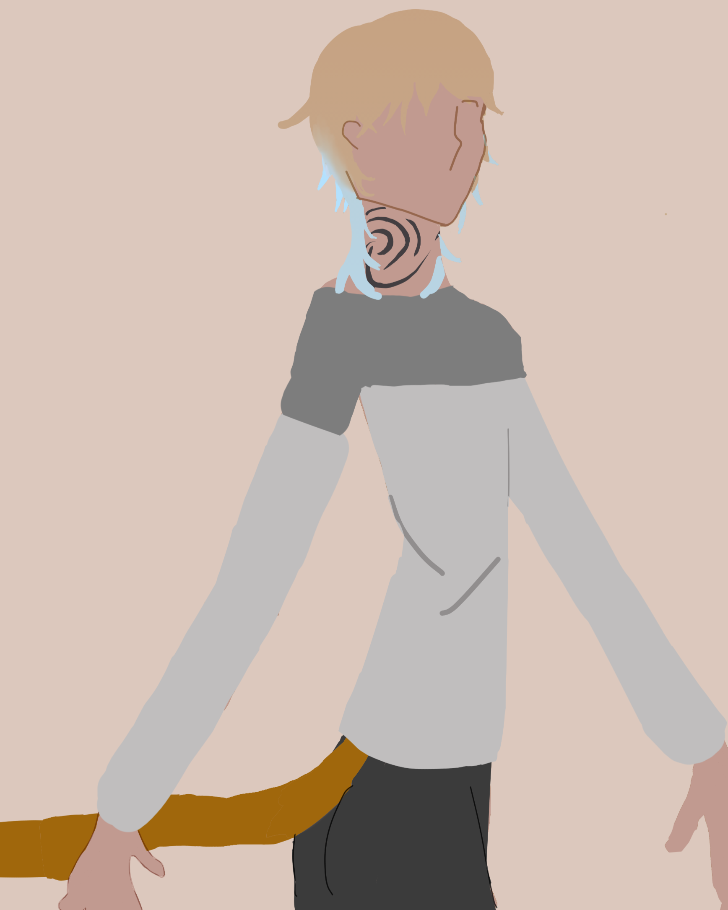
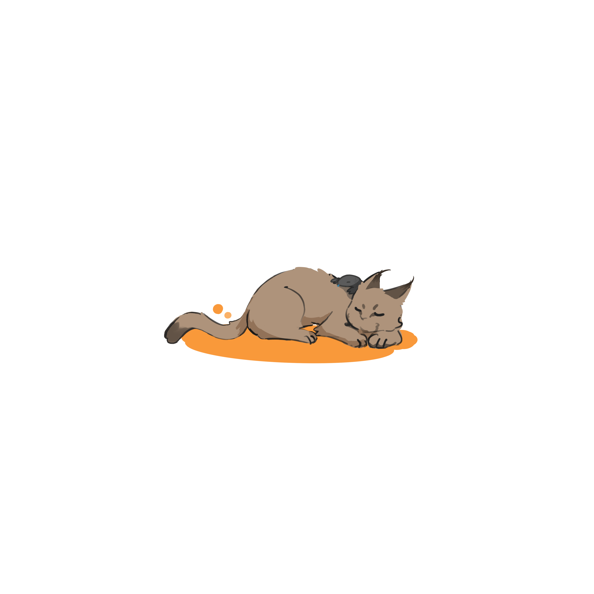
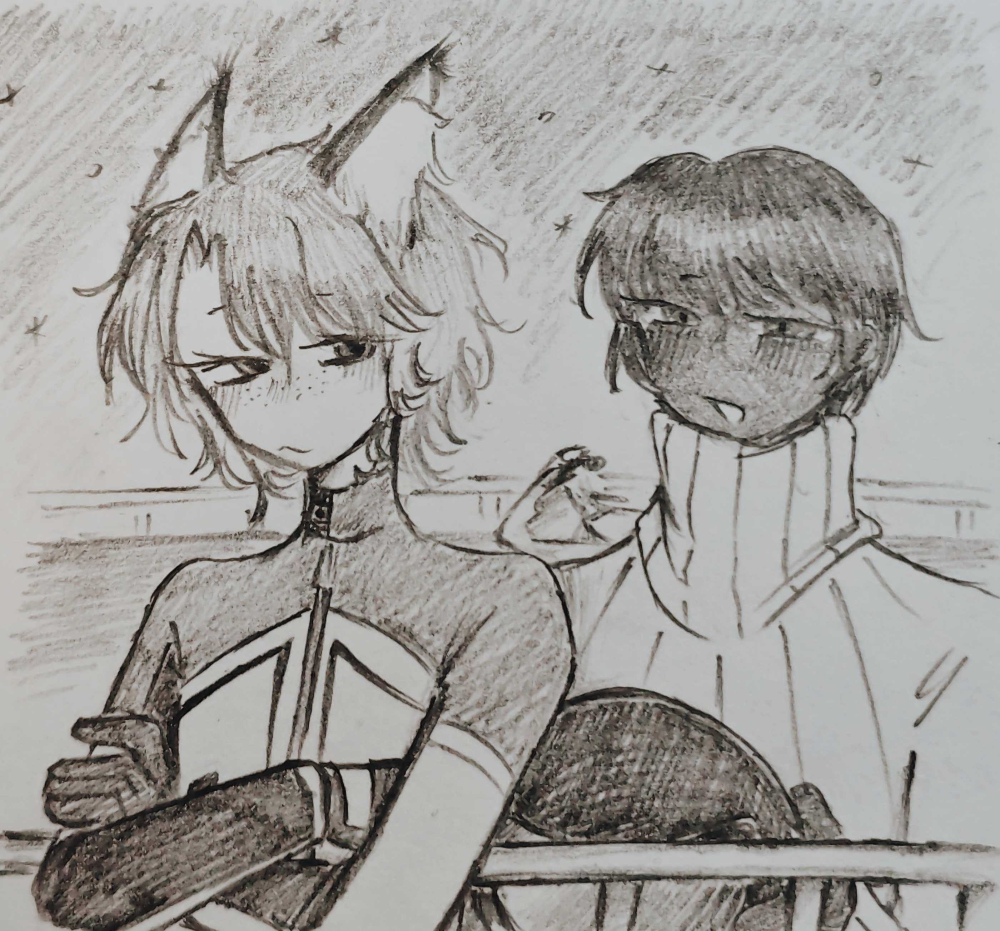
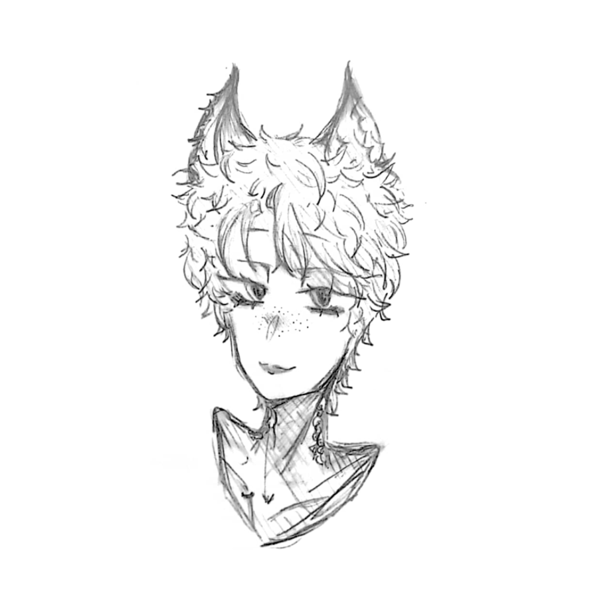

Vosto全域資料庫
Vosto全域資料庫
「來小爺的店裡坐坐。」
在幸福的家庭出生，一場橫禍導致被迫分開，自此過著光怪陸離的人生，你所界定的成功，是什麼呢？
| 凱內爾姆 Kenelm | |
|---|---|
 |
|
| 姓名 | 凱內爾姆 |
| 生日 | ？月？日 |
| 年齡 | 29歲 |
| 性別 | 男 |
| 身體資訊 | 175公分 | 72公斤 |
| 愛好 |
毛線 兔子 小型動物 |
| 不喜 |
內臟 毛髮 |
美好的童年與分離的記憶，交織而成環境複雜的他，野生族群給與化人的方式，黑手黨賜予他在聯邦的身分，這之間又參雜著層層利益。
開業後幾年，一場意外認識了喜愛他的青年，凱內爾姆卻起了逗弄心思，最終將迎來的是什麼，他並不在意。
大且水汪汪的雙眼，上翹的睫毛在眨眼時格外的明顯，有一對雙眼皮，瞳膜是亮卡其色的，上翹眼尾總顯得勾人，鼻子不是那麼的挺拔，嘴巴下唇偏厚，上唇偏薄，看上去保含水分、潤澤，臉頰和鼻子有淡淡的雀斑。
頭髮上三分之一淺棕色，下三分之二都是淺藍，看上去雜亂無章，但其實是用手抓出的造型，感覺上有點狂野，後面的頭髮有留長至肩上方，脖子兩側有紋身，只是無意義的捲波浪與環環相扣的圓。
左側鎖骨有穿環，強壯的胸肌和若隱若現的腹肌，灰土偏向咖啡色的肌膚。
可以單獨露出獸耳，獸耳會有一簇黑毛，兩邊都有。
在分身上方刺著情慾的淫紋，並進行了私密處永久除毛。
服裝：
．天生的衣架子，各式裝扮在他身上都很好看
．交往期間私底下通常會穿沈六的衣服
對他來說這世間就像個遊戲場，什麼都想觸摸，有時人們覺得他愛搗亂，有時人們覺得他有趣，嚮往無拘無束的生活，抽離一段關係時，通常沒有任何的留戀，不喜歡他人糾纏，碰上那樣的情況會直接永遠消失。
因為喜歡人群，時常穿梭其中，好似在世界各地都有朋友，非常的自然熟，有時因為說話過於直白而遭來厭惡。偶爾來上一場打盹，麻煩事能不碰就不碰。
在他身上，看不到穩重兩個字，總是一溜煙就看不到人影，也許這一秒正在想事情，下一秒他就被其他東西吸引，腦袋裡總是鬼靈精怪不知道裝著什麼。
喜歡向別人撒嬌，樂意充當開心果，過度的玩笑會讓他難過很久。偶爾覺得自己是這個世界的老大，而其他人都是他的僕人。（實際上在店裡就是如此）
雖然聽不懂音樂，但是對他播放音樂的話，會很快就入眠。
感情：
開放式性關係（沈六是特例）。
自尊心極強，也不允許被踩到頭上，生氣便以沉默和逃避的方式溝通，也拉不下自尊跟別人道歉。
出生於總部某個富有家庭，他的爸爸、媽媽也是被同個家庭飼養，在那個家庭豐衣足食，每天吃好睡好，受盡飼主與家人的疼愛。幼時，在某一次出門遊玩時與家人失散，於他而言像一場戰爭，碰到野生獰貓，於是開始學習野外求生技巧，後來得到長老的優待，學會了化身人類。
離開，或者說逃離野生族群後，以人類姿態重回社會，在黑手黨的幫助下取得了新身份。闖出自己的明堂，開了一家夜總會專門僱用自願獻身的男性與女性，他的夜總會以不使用藥物與健康衛生出名。
長老的優待說難聽點就是——肉體交易。他起初並不怎麼喜愛性這件事，因為違背了生物本能，對他來說性只是為了傳宗接代，但變成人類徹底改寫了他的價值觀。
在剛取得身分那段時間，白天去打工，存了一筆錢買了廂房車後，晚上也會接一些私活，那些看上他的人們，只要支付一筆金額，便能和他度過一晚。將停放廂房車的營地附近改造，成為能容納在社會上難以生存的人們，而他們同樣也會以相同的方式生活（營業），當然也得躲避天眼的監控，但黑手黨有的是辦法，也為了追求刺激。
註：在沃斯托使用某些助興的藥物是合法的，但這點有些民眾不是很滿意。
該條目正在施工中。
安斯艾爾是他的上司，像損友的相處模式。
🖼️荷意味

點擊跳轉文章↗
🖼️亞特

🖼️遺失
